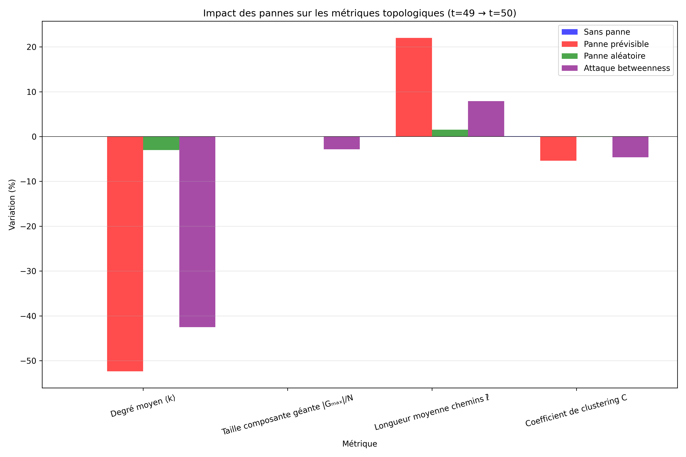

Rapport d'Analyse Topologique du Réseau Satellite
Date de génération: Lun 19 mai 2025 14:20:26 CEST
1. Métriques Topologiques Générales
Vue d'ensemble des 6 métriques clés pour évaluer la robustesse du réseau:
Figure 1: Évolution des métriques topologiques sous différents scénarios de panne
2. Focus sur les Métriques d'Efficacité
2.1 Efficacité Globale
L'efficacité globale mesure la rapidité moyenne de communication à travers l'ensemble du réseau.

Figure 2: Évolution de l'efficacité globale du réseau
2.2 Efficacité Locale
L'efficacité locale mesure la résilience du réseau autour de chaque satellite.

Figure 3: Évolution de l'efficacité locale du réseau
2.3 Comparaison des deux métriques d'efficacité

Figure 4: Comparaison entre l'efficacité globale et locale
3. Impact des Pannes et Attaques
Analyse comparative avant/après panne
Les variations des métriques suite aux différents scénarios de panne:

Figure 5: Impact des différents scénarios sur les métriques topologiques

Figure 6: Impact spécifique sur les métriques d'efficacité